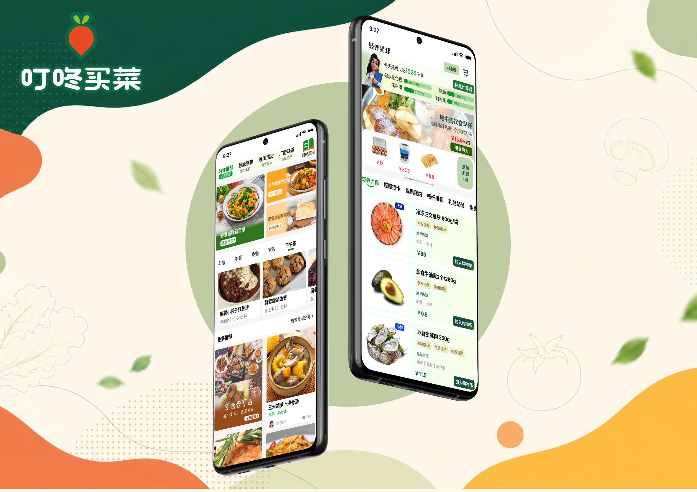
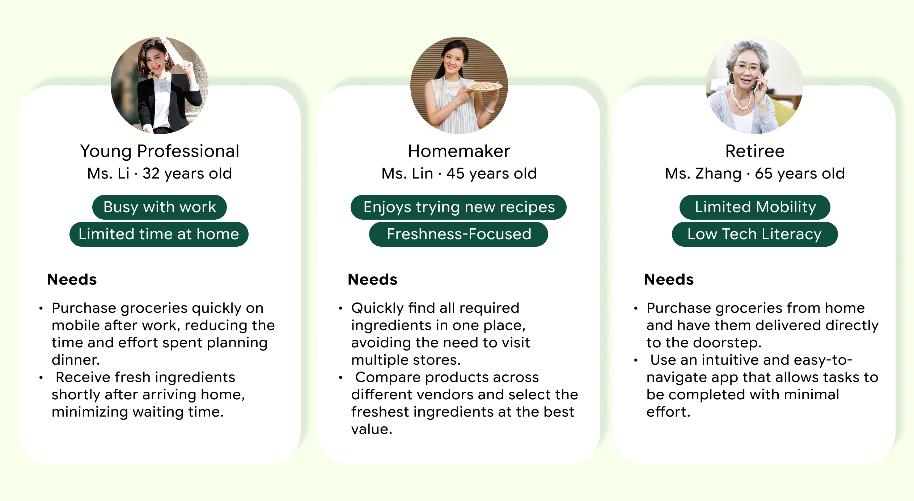
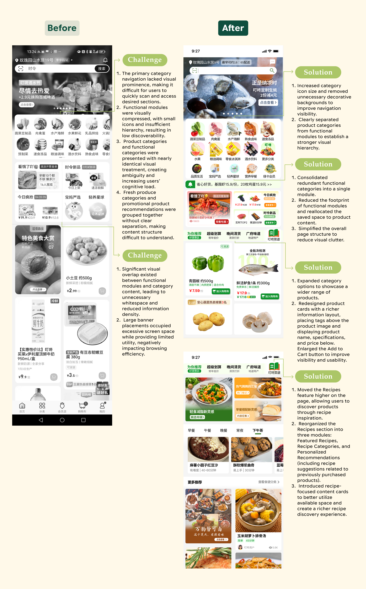
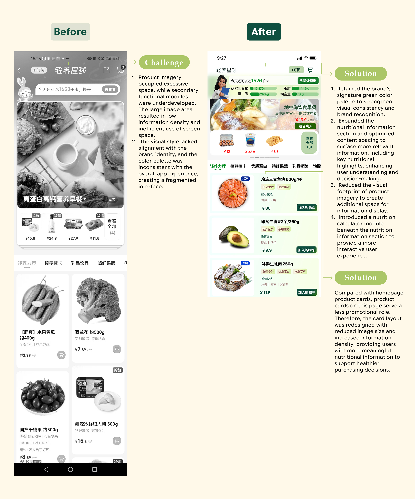

Dingdong Maicai
An end-to-end homepage redesign for China's leading fresh grocery platform.
Project Type
Mobile App UI/UX Redesign
Role
UI/UX Designer
Skills
User Research, Design System, Prototyping, Product Thinking
Tools
Figma
As Dingdong Maicai scaled, its homepage grew increasingly crowded: stacked promotions, fragmented category entries, and undersized product cards made everyday grocery shopping slower than it should be. This project is a structured redesign of the homepage and the Healthy Eating channel, moving from brand positioning analysis, user research, and competitive benchmarking, through information architecture and interaction refinement, to a cohesive visual system.
The goal was not to strip away business content, but to reorganize it so users could discover products faster while promotional surfaces remained effective. Every change traces back to a documented problem, and the final screens rebuild the page around fewer, clearer entry points and one unified card system.
Brand Positioning
Dingdong Maicai (叮咚买菜) is a self-operated fresh grocery delivery app specializing in produce, meat, seafood, and daily essentials. It operates as a vertically integrated retailer, sourcing, warehousing, and delivering perishables within 30 minutes in major Chinese cities. Its core value proposition centers on freshness guarantee, reliable delivery windows, and curated daily essentials.
User Research
Three core user groups

User Journey · Ms. Li · Young professional · After-work grocery run
| Stage | Open App | Browse Homepage | Find Ingredients | View Recommendations | Add to Cart |
|---|---|---|---|---|---|
| Action | Opens Dingdong Maicai | Scrolls through homepage | Searches for veggies and meat | Checks deals and suggestions | Adds items and checks out |
| Thought | What should I eat tonight? | So much going on | Where are the vegetables? | Any good discounts? | Hope checkout is quick |
| Emotion | 🙂 | 😐 | 😩 | 😐 | 🙂 |
| Pain Point | – | Too many ads | Messy categories | Low-value recommendations | – |
| Opportunity | – | Integrate modules | Optimize categories | Add recipe picks | Shorten the path |
Key Findings
Across interviews and scenario mapping, three patterns emerged consistently.
- Users feel overwhelmed by excessive promotional content. Flash sale timers, scrolling tickers, and stacked banners created urgency fatigue rather than helpful guidance.
- Product categories are difficult to scan efficiently. Twelve categories in a horizontally scrollable grid required high visual effort, especially for users shopping under time pressure.
- Recipe inspiration is disconnected from grocery shopping behavior. Users wanted meal ideas tied to purchasable ingredients, but the recipe module lived as a separate entry point with no purchase pathway.
Competitive Analysis
Learning from Hema, Pupu, and emerging grocery platforms
I benchmarked Dingdong against direct competitors to identify patterns that reduce cognitive load while sustaining promotional effectiveness.
Industry Trends
- Competitors are converging on green-dominant brand palettes to signal freshness
- Top performers use fewer, larger category entry points instead of dense icon grids
- Recipe content is increasingly embedded within product feeds rather than siloed
- Specialty channels use dedicated landing pages with unified card systems
Actionable Takeaways for Dingdong
- Remove oversized hero banners that push essential categories below the fold
- Standardize product card anatomy: image, tags, title, price, CTA
- Unify homepage and channel page layouts to reduce context-switching cost
- Use color-coded category channels to improve scan speed without adding modules

Core Problems
The existing homepage created friction at every stage of the shopping journey
Through heuristic evaluation, competitive analysis, and user scenario mapping, I identified systemic issues across information hierarchy, module consistency, and cross-page navigation.
No clear visual focal point
Promotional banners, category icons, and product cards competed for attention. Images were dense and similarly weighted, making it difficult for users to know where to look first.
Weak information hierarchy
Primary entry points (categories, flash sales) were undersized while secondary promotions dominated screen real estate. Product cards lacked structured metadata.
Disconnected content modules
Recipe inspiration, healthy eating channels, and the main product feed operated as isolated silos. Users could browse recipes but had no seamless path to purchase ingredients.
Inconsistent cross-page patterns
Homepage, category, and specialty channel pages used different card sizes, button styles, and layout grids, eroding brand cohesion.
Buttons and icons too small
Category icons were too small for comfortable tapping, while add-to-cart buttons on product cards were disproportionately tiny.
Scattered brand positioning
Promotional messaging, color usage, and module framing varied across sections, weakening Dingdong's identity as a trusted fresh grocery brand.
Design Challenge
How might we reduce cognitive load on the homepage while maintaining business exposure opportunities?
Design Principles
Four principles that guided every design decision
Reduce Clutter
Eliminate redundant banners and consolidate competing modules. Every element on screen must earn its place.
Increase Discoverability
Make high-frequency categories and channels immediately visible without horizontal scrolling or hunting.
Support Decision-Making
Structure product cards with clear tags, pricing tiers, and actionable CTAs so users can compare and choose confidently.
Create Emotional Engagement
Connect recipe inspiration and healthy living content to the shopping flow, turning utility into a guided experience.
Design Decision 01
Homepage Redesign
This decision targets four core problems: no clear visual focal point, weak information hierarchy, buttons and icons too small, and disconnected content modules. The homepage was rebuilt around fewer, larger entry points and a unified card system, with recipe inspiration woven directly into the feed.

Design Decision 02
Healthy Eating · Light Nutrition Planet
This decision answers two core problems: inconsistent cross-page patterns and scattered brand positioning. The health channel was rebuilt on the same card system as the homepage and given real nutrition content instead of decorative hero images.

Page Revisions
A systematic before-and-after across three revision dimensions
Information Architecture
Restructured page hierarchy, modularized content blocks, and established consistent information display patterns across all pages.
Interaction Design
Optimized category navigation, created dedicated channel landing pages, and improved filtering and content selection flows.
Visual Design
Clarified visual pathways, reduced non-essential decorative elements, and strengthened module differentiation to combat visual fatigue.
Design System
A scalable visual language rooted in freshness and clarity
Style
Through Dingdong's platform positioning and moodboard exploration, four style keywords anchor the visual direction.
Fonts
Chinese · Microsoft YaHei
微软雅黑 · 新鲜送达
English · Inter
Inter · Fresh Delivery
Chinese copy uses Microsoft YaHei for readability at small sizes. English copy uses Inter, a free commercial typeface that is slender and upright, steady yet fashionable.
Colors
The standard palette leads with fresh greens to express the brand tone.
#30761E
#0E932E
#F7FFEA
#FFA620
#FFD493
#FF0000
#954C17
#000000
#5B5B5B
#FFFFFF
Next Steps
Opportunities for further exploration
Usability Testing & Iteration
Validate the redesigned flows with moderated usability sessions focused on category discovery time, recipe-to-cart completion rate, and perceived cognitive load.
Personalization Layer
Explore adaptive homepage modules that reorder based on time of day, purchase history, and dietary preferences.
Design System Documentation
Expand the component library into a full Figma design system with documented states, spacing tokens, and developer handoff specs.
Accessibility Audit
Conduct WCAG compliance review on color contrast ratios, touch target sizes, and screen reader compatibility across all redesigned modules.